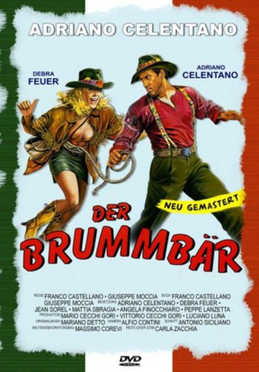

#4648 Der Brummbär
 
 IMDB-Wertung: 6.3 / 10
IMDB-Wertung: 6.3 / 10  Metascore: 0
Metascore: 0 
Die Amerikanerin Mary wird von ihrem Angetrauten Machiavelli nach Italien eingeladen, weil er angeblich plötzlich sehr reich geworden sein soll. Am Flughafen kann sie dem rüden und brummigen Anwalt Tito Torrisi einen Platz abschwatzen, doch schon bald wird die eigentlich unerfreuliche Bekanntschaft zum Dauerzustand, denn drei sinistre Gestalten sind hinter Mary her und ihr Mann liegt inzwischen im Leichenschauhaus. Alles was bleibt, ist ein mysteriöser Rätselplan, den ihr Mann noch an Torrisi geschickt hatte. Gemeinsam machen sie sich daran, die Riesengeldsumme aufzufinden, die im Plan verschlüsselt ist und kommen sich natürlich immer näher...
Jahr: 1986
Dauer: 113 Minuten
FSK: 6
Land: Italien Studio: Cecchi Gori Home VideoTonspuren: DD2.0 - ,
Untertitel:
Auflösung: 1080p (1920x1080) Größe: 6912 MB
Genre: Komödie
Regisseur: Franco Castellano, Giuseppe Moccia
Drehbuch: Michael Konyves
Soundtrack:
Darsteller:
 Adriano Celentano als Tito Torrisi
Adriano Celentano als Tito Torrisi- Debra Feuer als Mary Cimino
- Jean Sorel als Giulio Machiavelli
- Angela Finocchiaro als Emilia
- Peppe Lanzetta als Malfattore
- Iaia Forte als
- Mattia Sbragia als Capo della banda
- Percy Hogan als Malfattore
- Loredana Addari als
- Michela Albanese als
- Luigi Bonos als Una guardia
- Vincenzo De Toma als
- Franco Diogene als Controllore vagoni letto
- Tom Felleghy als Uomo alla riunione
- Francesco Scali als Pathologist
Datei: X:\1986\Brummbär, Der (1986, FSK6, 1920x1080).mkv seit 31.10.2016
Festplatte: HD 1980-1986
 Es gibt insgesamt 50 Filme in der Gruppe '1986'
Es gibt insgesamt 50 Filme in der Gruppe '1986'